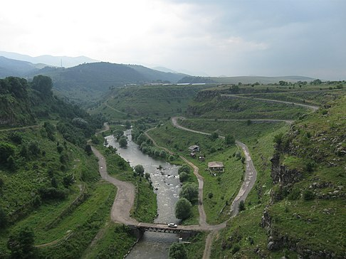
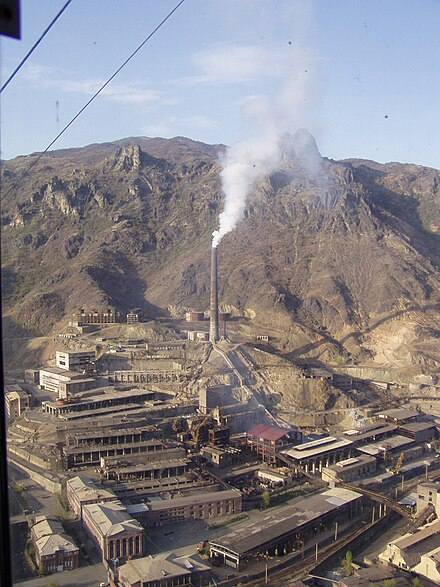

Լոռու մարզ, մարզի կարգավիճակ ունեցող վարչատարածքային միավոր Հայաստանի հյուսիսում։ Զբաղեցնում է պատմական Հայաստանի Գուգարաց նահանգի արևելյան հատվածն ու Այրարատ նահանգի Նիգ գավառի հյուսիսային տիրույթները։ Լոռու մարզն ունի ցայտուն արտահայտված բնական սահմաններ։ Այն ընդգրկում է Դեբեդ գետի ավազանն ամբողջությամբ և հիմնականում ունի լեռնային ռելիեֆ՝ բարձրադիր լեռներ, անդնդախոր, երբեմն սուր կտրվածքով կիրճեր։ Նրա տարածքում են ձգվում Ջավախքի, Բազումի, Փամբակի, Գուգարաց, Վիրահայոց և Հալաբի լեռնաշղթաները։ Առանձնանում են Լոռու,Փամբակի գոգավորությունները և Լոռվա ձորը։ Բնակավայրերը գտնվում են ծովի մակերևույթից 520-ից մինչև 1800 մետր բարձրության վրա։ Մարզի վարչական կենտրոն հանդիսացող Վանաձոր քաղաքը համարվում է Հայաստանի երրորդ խոշորագույն քաղաքը՝ շուրջ 80 հազար բնակչությամբ։ Մյուս խոշոր բնակավայրերն են Ալավերդին, Ստեփանավանը, Սպիտակը, Թումանյանը, Ախթալան և Տաշիրը։ Ըստ 2020 թվականի տարեսկզբի տվյալների՝ մարզի բնակչությունը կազմում է 213․3 հազար մարդ, որի ճնշող մեծամասնությունը հայերն են, սակայն համեմատականորեն քիչ չեն նաև ազգային փոքրամասնությունների (ռուսական, հունական, եզդիական, ուկրաինական և այլն) համայնքները[փա՞ստ]։ Լոռին Հայաստանի արդյունաբերական մարզերից է։ Այստեղ են գործում Հայաստանի տնտեսության արդյունաբերական ճյուղի անկյունաքարային նշանակություն ունեցող մի շարք օբյեկտներ։ Արդյունաբերության զարգացվածության ֆոնին ավելի քիչ զարգացած է գյուղատնտեսությունը։ Լոռին աչքի է ընկնում նաև հարուստ մշակութային ժառանգությամբ և պատմական անցյալով, որի մասին վկայում են տասնյակ վանքերը, բերդերը, ամրոցներն ու հուշակոթողները։ Պատմամշակութային ինքնատիպ հուշարձանների բազմազանությունը որոշակիորեն պայմանավորված է այն հանգամանքով, որ 10-12-րդ դարերում այստեղ գոյություն է ունեցել անկախ հայկական պետականություն՝ ի դեմս Լոռու կամ Տաշիր-Ձորագետի թագավորության։ Հայաստանում ՅՈՒՆԵՍԿՕ-ի Համաշխարհային ժառանգության ցանկում ներառված օբյեկտներից երկուսը՝ Հաղպատի ու Սանահինի միջնադարյան վանական համալիրները գտնվում են Լոռու մարզում։
Անուն և անվան ծագումնաբանություն
«Լոռի» անվանումն առաջին անգամ հիշատակվում է 11-րդ դարում և կարող է փոխկապակցված լինել լոր թռչնի անվան հետ։ Այդ տարում Հայաստանի հյուսիսում կառավարած Դավիթ Ա Անհողին Կյուրիկյան արքան Ձորագետ և Ուռուտ կիրճերի հատման մասում հիմնադրում է Լոռի կամ Լոռե բերդը, որը 1065 թվականին դառնում է Անիի Բագրատունյաց թագավորությունից անկախացած Տաշիր-Ձորագետի թագավորության քաղաքամայր-ոստանը[3]։ Բերդի անունով թագավորությունը երբեմն անվանվում է նաև Լոռու թագավորություն[4]։ Հետագայում, «Լոռի» անվանումը տարածվում է ամբողջ Տաշիրի գավառի վրա[5]։ Այսպես են անվանակոչվում պատմական Հայաստանի Գուգարք նահանգի ահմաններում գտնվող մի շարք աշխարհագրական օբյեկտներ, այդ թվում՝ Լոռիգետն ու Լոռվա սարահարթը։ «Լոռի» անունով գյուղեր հայտնի են նաև Արևմտյան Հայաստանի Կարսի մարզի Արդահան և Տրապիզոնի վիլայեթի Գյումուշխանեի գավառում։
Ֆիզիկա-աշխարհագրական բնութագիր
Լոռու մարզը Հայաստանի Հանրապետության տարածքի մեծությամբ երրորդ մարզն է 3789 կմ² տարածքով (Հայաստանի տարածքի 12.7 %-ը)։ Այն հյուսիս-արևմուտքում սահմանակցում է Արագածոտնի, հյուսիս-արևելքում՝ Կոտայքի, արևմուտքում՝ Շիրակի և արևելքում՝ Տավուշի մարզերին։ Հյուսիսում սահմանակցում է Վրաստանին։ Բազմաթիվ լեռնային առվակներից բացի Լոռու մարզով են հոսում հինգ գետ՝ Դեբեդ, Ձորագետ, Տաշիր գետ, Փամբակ և Աղստև։ Լոռու մարզում ծովի մակերևույթից բարձրագույն կետը Աչքասար լեռան գագաթն է (3196մ), ամենացածրը՝ Դեբեդ գետի ստորին հոսանքի շրջանը (մոտ 380մ)։ Լոռու մարզն ընդգրկում է Դեբեդ գետի ավազանը ամբողջությամբ և ունի լեռնային ռելիեֆ։ Նրա տարածքում են ձգվում Ջավախքի, Բազումի, Փամբակի, Գուգարաց, Վիրահայոց, Հալաբի լեռնաշղթաները։ Առանձնանում են Փամբակի, Լոռվա գոգավորությունները և Լոռվա ձորը։
Կլիմա
Լոռու մարզն աչքի է ընկնում համեմատաբար խոնավ կլիմայով։ Լոռու և Տավուշի մարզերը համարվում են Հայաստանի ամենախոնավ մարզերը։ Միջին և բարձրադիր գոտում կլիման բարեխառն լեռնային է, բնորոշ են տևական, ցուրտ ձմեռները։ Յուրաքանչյուր տարի հաստատվում է կայուն ձնածածկույթ։ Ամառները տաք են, համեմատաբար խոնավ։ Տարեկան թափվում են 600-700 մմ մթնոլորտային տեղումներ։ Նախալեռնային գոտում կլիման մերձարևադարձային է. բնորոշ են չափավոր շոգ և չորային ամառները, մեղմ ձմեռները։ Ագրոկլիմայական տեսակետից ընկած է ինտենսիվ ոռոգման գոտում։
Ջրագրություն
Լոռու մարզն առանձնանում է ջրագրական խիտ ցանցով, որը պայմանավորված է տարածքի երկրաբանական և ջրաերկրաբանական կառուցվածքով, ռելիեֆի առանձնահատկություններով, մթնոլորտային առատ տեղումներով։ Ջրի մանրեաբանական անալիզների հետազոտությունների տվյալները վկայում են, որ մարզի խմելու ջրի աղբյուրները ունեն բարձր որակական հատկանիշներ։ Մարզի տարածքում հոսում են 1356 գետեր և գետակներ, որոնց ընդհանուր երկարությունը 3505 կմ է, նրանցից միայն 55-ը (4,1%), ունեն 10 և ավելի կմ երկարություն։ Լոռու մարզի գետերի ջրերը հիմնականում օգտագործվում են էներգետիկ և ոռոգման նպատակներով։ Դեբեդ գետի խոշոր աղտոտողներից են համարվում մարզի խոշոր արդյունաբերական ձեռնարկությունները[6]։ Վանաձոր քաղաքում գործում է կոյուղու մաքրման մեխանիկական – կենսաբանական կայան, որով անցնող կեղտաջրերի հոսքը կազմում է 30լ/վրկ, կատարվում է միայն մասնակի մեխանիկական մաքրում։ Կեղտաջրերի մեծ մասը առանց մաքրման անմիջապես թափվում է Փամբակ գետը։ Լոռու մարզում 2015թ. կոյուղի բաց թողնված կեղտաջրերի հեռացման ծավալը 2013թ.-ի համեմատ նվազել է 18%։ Կեղտաջրերի մեծ մասը առանց մաքրման անմիջապես թափվում է Փամբակ գետը։
Պատմություն
Լոռու մարզը զբաղեցնում է պատմական Հայաստանի Գուգարաց նահանգի արևելյան հատվածն ու Այրարատ նահանգի Նիգ գավառի հյուսիսային տիրույթները։ Ինչպես Լոռու, այնպես էլ նրանում գտնվող մի շարք բնակավայրերի մասին հայկական և օտարալեզու սկզբնաղբյուրներում կան բազմաթիվ հիշատակություններ և վկայություններ։
Նախապատմական շրջան և վաղ ժամանակներ
Մերօրյա Լոռու մարզի տարածքը մարդու հնագույն բնակության վայրերից է։ Այս մասին վկայում են Դեբեդի կիրճի քարանձավներում (որոնցից ամենահայտնին Ալավերդիի Սանահին-Սարահարթ թաղամասում գտնվող Մենձ-էրն է) իրականացված հետազոտությունները։ Լոռին մ.թ.ա. 2200-1600 թվականներին գոյություն ունեցած միջին բրոնզեդարյան Թռեղք-վանաձորյան մշակույթի օրրաններից է։ Թռեղքյան դամբարանները, ըստ ակադեմիկոս Պիոտրովսկու, «բերեց մեզ հնագույն մշակույթի պատկերը` իր ինքնատիպությամբ և աննախադեպ բարբարոսական շքեղությամբ»։ Թռեղքյան մշակույթի գոյության վերաբերյալ տեղեկությունները հաստատվել են դամբարանաբլուրներում եղած հուղարկավորությունների սրահների գտածոների միջոցով։ 1931 թվականին խորհրդային կարգերի օրոք կատարված պեղումները վկայում են, որ ժամանակակից Լոռու մարզը, ամենայն հավանականությամբ, բնակեցված է եղել դեռևս մ.թ.ա. 2-րդ հազարամյակի 1-ին կեսին։

Դեբեդի հովիտը մարդու հնագույն բնակության վայրերից է։ Դեբեդի կիրճի քարանձավները համարվում են հնագիտական ուսումնասիրությունների կարևոր օբյեկտ տարածաշրջանում։
Ըստ Մովսես Խորենացու՝ Գուգարաց նահանգի բոլոր գավառական տարածքները, ներառյալ Տաշիրը, կառավարվել է Հայկազունիների տոհմի կողմից։ Պատմահայրը հիշատակում է Հայկ նահապետից սերող Գուշար Հայկազունուն (Աշոցյանների նահապետ Շարայի ցեղից), ում անունով էլ անվանակոչվել է Գուգարք (Գոգարենե) աշխարհը։ Գուշար Հայկազունիին Վաղարշակ Արշակունուն, որպես վարձատրություն իր քաջագործությունների համար, ժառանգություն է թողնում Մթին լեռը՝ Կանգարքը և Ջավախքի մի մասը, Կողբը, Ծոփը, Ձորը և Հնարակերտ ամրոցը, իսկ Աշոցքի տեր և Տաշիրքի սեպուհ նշանակվում է Վաղարշակը՝ Հայկազն Գուշարի զավակներից։ Մ․թ․ա․ 9-րդ դարում Լոռու տարածքը անցնում է Վանի թագավորությանը։ Հայկակա պետականության թուլացման ֆոնին սկսված Աքեմենյան արշավանքների արդյունքում Գուգարքի տարածաշրջանը դառնում է Պարսկաստանի 18-րդ սատրապության տիրույթ։ Մ․թ․ա․ 331 թվականին՝ Երվանդունյաց արքայատոհմի հաստատմամբ, Գուգարքը դառնում է Մեծ Հայքի թագավորության 13-րդ նահանգը։ Երվանդունիների պետականությունը շարունակում է գոյություն ունենալ մինչև մ․թ․ա․ 201 թվականը։ Ըստ Կիրիլ Թումանովի՝ օգտվելով Հայաստանում տիրող խառնակ իրավիճակից և պետականության բացակայության փաստից, ժամանակի ընթացքում Հայաստանի հյուսիսային շրջանները՝ այդ թվում և Գուգարքը, յուրացվում են հարևան Իբերիայի (Վրաց) թագավորության Փառնավազյան արքաների կողմից։ Տաշիրի և Աշոցքի ձեռքբերումից հետո Փառնավազյանները ձեռնամուխ են լինում Վիրքի գերագահության ներքո նոր վարչատարածքային միավորի ձևավորման՝ ի դեմս Սամշվիլդեի էրիսթավության, որի կազմի մեջ էլ ներառվում են հյուսիսային հայկական տարածքները։ Սելևկյանների տերության թուլացման արդյունքում մ․թ․ա․ 189 թվականին Արտաշեսյանների արքայատոհմը վերականգնում է Մեծ Հայքի թագավորությունը, իսկ հիմնադիր-արքա Արտաշես Ա Բարեպաշտի միավորիչ գործունեության արդյունքում Գուգարքն ու Կղարջքը վերադարձվում են Հայաստանին։ 1-ին դարի սկզբին Արտաշեսյանների թագավորությունն անկում է ապրում։ Օգտվելով կենտրոնական իշխանության բացակայությունիվ՝ Իբերիան վերստին իր վերահսկողությունը հյուսիսային Հայաստանի նկատմամբ, սակայն այդ իրավիճակը երկար չի շարունակվում, քանի որ նույն դարավերջին՝ 66 թվականին, Արշակունիների տոհմը վերականգնում է Մեծ Հայքի անկախությունն ու վրացիների կողմից զբաղեցված հայկական տարածքները։
Միջնադարյան ժամանակաշրջան
Միջնադարյան հայկական թագավորությունների կազմում
387 թվականի Հայաստանի առաջին բաժանումից հետո Լոռին կարճ ժամանակահատվածով անցնում է Իբերիային, սակայն կարճ ժամանակ անց Արշակունիները վերադարձնում են այն, և Լոռին շարունակում է մնալ հայոց պետականության կազմում մինչև Մեծ Հայքի Արշակունյաց թագավորության անկումը։ Պատմիչներ Ղազար Փարպեցին և Եղիշեն նշում են, որ Տաշիրի իշխանները 450-451 թվականներին մասնակցում են Սասանյանների դեմ ապստամբությանը։ Հայտնի է, որ այս շրջանում Գուգարքի բդեշխ Վազգենը, որը հետագայում կրոնափոխ է լինում և դավաճանում հայրենիքը, ամուսնացած է եղել ապստամբական շարժման առաջնորդ Վարդան Մամիկոնյանի ստեր՝ Շուշանիկի հետ։ 5-րդ դարում Տաշիրը դառնում է առանձին իշխանություն, իսկ 7-րդ դարում՝ վերադառնում բդեշխության կարգավիճակին։ 9-րդ դարում Տաշիրին տիրում է Աշոտ Ա Կյուրոպաղատի որդի Գուարամ Մամփալին։ Հայտնի է, որ վերջիններս նախկինում չեն եղել այս տարածքների տերերը։ 876 թվականին Գուարամը Գուգարաց հողերը և Աշոցքը հանձնում է իր փեսա Աշոտին՝ Հայաստանի ապագա արքային։ Բագրատունյաց առաջին արքաների՝ Աշոտ Մեծի և Սմբատ Նահատակի կառավարման ժամանակահատվածում հյուսիսային Հայաստանը, մասնավորապես՝ Լոռին, կառավարվում էր արքայատոհմին չպատկանող և անուղղակիորեն Բագրատունիների հարստության հետ որևէ արյունակցական կապ չունեցող կառավարիչ-վերակացուների միջոցով, որոնք նշանակվում էին Անիի կենտրոնական թագավորության արքայի անմիջական գահնամակով։ 977 թվականին Աշոտ Գ Ողորմած արքայի՝ Գուգարքի կառավարչի պաշտոնում նշանակմամբ և 982 թվականին՝ վերջինիս թագադրմամբ, նշանավորվում է Բագրատունիների կրտսեր ճյուղի՝ Կյուրիկյանների ժառանգական իշխանության հաստատումը Գուգարք նահանգի հարավային և արևելյան հատվածներում, ինչպես նաև հյուսիսային Ուտիքում, այդ թվում՝ Գարդմանում և Փառիսոսում։ Այսպիսով, Հայաստանի հյուսիսում հիմնադրվում է Անիի թագից վասալական կախման մեջ գտնվող Տաշիր-Ձորագետի ենթակա թագավորությունը, որն իր հզորության գագաթնակետին հասնում է Դավիթ Անհողին արքայի կառավարման տարիներին։ Իր երկարատև իշխանության օրոք Դավիթ արքան ամրացնում է երկրի արտաքին սահմանները, մայրաքաղաքը տեղափոխում Սամշվիլդե, ջախջախում Տաշիր-Ձորագետի սահմաններն ասպատակած Գանձակի ամիրայի զորքերին, իր ազդեցությանը ենթարկում Կախեթ-Հերեթի թագավորությանն ու Դմանիսի իշխանությանը, ինչպես նաև կայուն հարաբերություններ հաստատում հարևան պետությունների հետ։ Հաջորդիվ Լոռու գահակալը փորձում է ազատվել վասալական կախվածությունից, սակայն պարտություն է կրում Բագրատունյաց հայոց շահնշահ Գագիկ Ա-ից և կորցնում Կայան և Կայծոն ամրոցները։ Հետագա տարիներին Տաշիր-Ձորագետի թագավորությունը բռնում է լճացման ուղին։ Չկարողանալով դիմակայել սելջուկ-թուրքերի արշավանքներին՝ Կյուրիկե Բ արքան 1064 թվականին ճանաչում է Ալփ-Արսլանի գերիշխանությունը։ Միևնույն ժամանակաշրջանում, վրաց արքա Բագրատ IV-ը գրավում է Սաշմվիլդեն Կյուրիկե Բ-ից, որը ստիպում է Լոռու արքային թագավորական ոստանը տեղափոխել Լոռե բերդ, որը հիմնադրել էր իր հայրը։ 1105 թվականին Լոռին ենթարկվում է էմիր Քըզըլի ասպատակություններին։ 1111 թվականին Սելջուկյան սուլթանությունը մեծ բանակով վերստին ներխուժում է Տաշիր-Ձորագետի թագավորություն և հանդիպում Աբաս Ա Կյուրիկյան արքայի զորքերի դիմադրությանը։ Երկու տարում վաչկատունները նվաճում են ամբողջ թագավորությունը, որի արդյունքում գահակալները ստիպված են լինում տեղափոխվել Հայոց արևելից կողմանք։
Վրաց թագավորության կազմում
1110-1123 թվականներին մի շարք հայկական հողեր, ներառյալ Լոռին, անցնում են Վրաստանը միավորելու իղձով համակվա Դավիթ Շինարար արքային։ Վրաց տարեգրությունը հաղորդում է Դավթի նվաճումների մասին. «... Նույն թվականին նա նվաճում է Լոռե հայկական ամրոցը»։ Վարդան Արևելցի պատմիչի հավաստմամբ՝ Վրաց թագավորությանն են անցնում հյուսիսային Հայաստանի Գագ, Տերունակապ, Տավուշ, Կայան, Կայծոն, Լոռե, Տաշիր և Մախկանաբերդ պաշտպանական ամրությունները։ Այս իրադարձություններից հետո վրաց արքան կրում է նաև «հայոց թագավոր» տիտղոսը։ Ազատագրումից հետո Դավիթ Շինարարը Լոռու կառավարումը հանձնում է Օրբելյան իշխաններին, սակայն 1177 թվականին վերջիններս անհաջող ապստամբություն են բարձրացնում և զրկվում իրենց կալվածքներից։ Գեորգի III-ը Լոռու կառավարումը հանձնում է ղփչաղ Խուբասարին, սակայն ութ տարի անց՝ 1185 թվականին, Թամար թագուհին տարածաշրջանի կառավարումը հանձնում է Սարգիս Զաքարյանին, որը նախօրեին նշանակվել էր վրաց ամիրսպասալար՝ սպարապետ։ Զաքարյան (վրացական տարբերակով՝ Մխարգրձելի) տոհմի հաստատմամբ Հայաստանում հիմնադրվում է Զաքարյանների իշխանապետությունը։ Զաքարյանները, վրացական թագի ներքո, իշխում են մինչև 13-րդ դարի սկիզբը։ Նույն շրջանում Մամիկոնյանների տոհմը իշխում է Դսեղում և հարակից տիրույթներում։ 1225 թվականին Լոռին ժամանակավորապես անցնում է խորեզմշահ Ջալալեդդինին։ 1236-1237 թվականներին Լոռին և Հայաստանի զգալի մասը գրավում են մոնղոլները։ Մոնղոլական նվաճումների նախօրեին Լոռին հայկական արհեստագործության և առևտրի հիմնական կենտրոններից էր։ 14-րդ դարավերջին Լոռին ավերվում է Թամերլանի զորքերի կողմից։ Վրաց թագավորության կազմում գտնվող հայկական շրջաններից Լոռին ամենաշատն է տուժում Թամերլանի գլխավորած թուրքմենական արշավանքներից։ Վրաստանի կազմում գտնվող հայկական շրջանները 1435 թվականին փոխանցվում են Օրբելյանների կառավարմանը։
Պատմամշակութային հուշարձաններ
Լոռու մարզում են գտնվում ՅՈւՆԵՍԿՕ-ի Համաշխարհային ժառանգության ցանկում ընդգրկված Հաղպատի և Սանահինի վանքերը։ Պատմական նշանակություն ունեն նաև մարզում գտնվող Լոռի բերդի փլատակները։ Հայտնի են Օձունի վանքը, Սուրբ Հովհաննես վանքը Արդվիում, որտեղ գտնվում է Հովհաննես 3-րդ Օձնեցի կաթողիկոսի գերեզմանը, Ախթալայի եկեղեցին և ամրոցը, Հոռոմայրի եկեղեցին, Դորբանտավանքը, Վարդաբլուրի Ջգրաշեն եկեղեցին, Վարդաբլուրի Սուրբ Սարգիս լեռան գագաթին Կյուրիկե թագավորի կառուցած բարձրադիր ապարանքը (Ասրոն, 1050թ.) Կուրթանի Սուրբ Աստվածածին եկեղեցին, Հնեվանքը, Սուրբ Հովհաննես ուխտատեղին, Քոբայրի եկեղեցին, Ալավերդու միջնադարյան կամուրջը և այլն։ ՀՀ պատմության և մշակույթի անշարժ հուշարձանները Լոռու մարզում ներառում են շուրջ 3045 հուշարձան։ Լոռու մարզի հուշարձանները հիմնականում հանրապետական նշանակության են և կարող են ընդգրկվել ՀՀ զբոսաշրջային ռազմավարական նշանակություն ունեցող երթուղիներում։ Մարզի հուշարձանները թվագրվում են Ք.ա. 5 հզ. տարուց մինչև մեր օրերի նորակառույցները։ Մարզի տարածքում են գտնվում համաշխարհային մշակութային ժառանգության օբյեկտների ցանկում (ՅՈՒՆԵՍԿՕ) ընդգրկված երկու հուշարձան` Հաղպատի ու Սանահինի հրաշակերտ վանական համալիրները[7]։
Հաղպատավանք
Լոռի
Սանահինի վանք
Ախթալայի վանք
Լոռու մարզի պատմաճարտարապետական հուշարձանները իրենց քանակով, բազմազանությամբ ու արժեքայնությամբ առանձնահատուկ տեղ են գրավում Հայաստանի այլ մարզերի նմանտիպ կոթողների շարքում։ Դրանք գալով դարերի խորքից` սերունդներին են ներկայացնում մեր ժողովրդի բազմադարյան նյութական մշակույթի ակնառու նվաճումները։ Լոռու մարզում մարդու մշակութային գործունեության հետքերը գալիս են հնագույն ժամանակներից մինչև մեր օրերի նորակառույցները։ Դրանց մեջ մտնում են պատմական բնակատեղիներ, ամրոցներ, վանական համալիրներ, եկեղեցիներ, կամուրջներ, աղբյուրներ, մահարձան-կոթողներ, խաչքարներ ու աշխարհիկ կամ կենցաղային շինություններ։ 12-13-րդ դդ. Լոռու ճարտարապետության ամենաբուռն ծաղկման շրջանն է համարվում։ Այդ ընթացքում տարածքը վրաց իշխանների` Օրբելյանների և Զաքարյանների սեփականությունն էր, ուստի այդ ժամանակաշրջանում Լոռին Վրաստանի հետ ապրել է միևնույն սոցիալ-տնտեսական, մշակութային և դավանաբանական կյանքով, և անխուսափելի էր երկու ժողովուրդների մշակութային, այդ թվում` ճարտարապետական հուշարձանների ոճական նմանությունները։ Դա վերաբերում է հատկապես Ախթալայի և Քոբայրի վանքերին, Բգավորի, Հնեվանքի, Մեծավանի և մի շարք այլ եկեղեցիներին։ Ցավոք մեզ չեն հասել կամ հասել են գրեթե ավերակ վիճակում քաղաքներն ու ամրոցները։ Հավելվածներ 2-4-ում ներկայացված են ոչ միայն զբոսաշրջային առօրյայում առավել շատ այցելվող տեսարժան վայրերը (օրինակ` Հաղպատ, Օձուն, Սանահին, Հնեվանք, Լոռեբերդ, Քառասնից մանկանց վանք, Քոբայր, Արդվի, Կուսանաց անապատ, Խորակերտի վանք, Չախալաբերդ, Խուճապի վանք), այլև պատմաճարտարապետական այնպիսի հուշարձաններ և տեսարժան վայրեր, որոնք ունեն բազմաթիվ արժանիքներ տուրփաթեթների մեջ զետեղվելու, սակայն դուրս են մնացել տուրօպերատորների ուշադրությունից և մատնվել են մոռացումի։
Վարչատարածքային բաժանում
Լոռու մարզը կազմված է 11 համայնքներից, որոնք իրենց հերթին կազմված են քաղաքային և գյուղական բնակավայրերից։ Լոռու մարզի համայնքներն են Ալավերդին, Գյուլագարակը, Թումանյանը, Լերմոնտովոն, Լոռի Բերդը, Սպիտակը, Ստեփանավանը, Վանաձորը, Տաշիրը, Փամբակը, Ֆիոլետովոն[1]։ Ներկայիս վարչատարածքային միավորը ձևավորվել է 1995 թվականին Խորհրդային Հայաստանի մաս կազմող Թումանյանի, Գուգարքի, Սպիտակի, Ստեփանավանի և Կալինինոյի շրջանների միավորման արդյունքում։
Բնակչություն
Լոռու մարզը բնակեցված է եղել հնագույն ժամանակներից։ Այժմ մյուս մարզերից տարբերվում է բնակչության ավելի մեծ բացարձակ թվով։ Մարզի մյուս հատկանշական կողմն այն է, որ նա բնակչության ուրբանիզացման ամենաբարձր մակարդակ ումեցող մարզերից է։ Ըստ 2001 թվականի մարդահամարի՝ Լոռու մարզում են բնակվում շուրջ 283,900 մարդ։ Բնակչության մոտ 59.3% (167.3 հազար մարդ) քաղաքաբնակ է, մնացած 116.6 հազարը բնակվում են գյուղային համայնքներում։
Լոռու մարզի քաղաքների մշտական բնակչությունը՝ 2021թ․-ի հունվարի 1-ի դրությամբ
Էթնիկ խմբեր
Ընդհանուր բնակչության 97%-ից ավել կազմող հայերից բացի, Լոռու բնակիչների որոշ մասը իրենց դասում է հետևյալ ազգային փոքրամասնություններին. ռուսներ՝ 3,882 (1.3%), եզդիներ՝ 793 (0.3%), հույներ՝ 655 (0.2%), այլ՝ 607[9]։
Կրոն
Ինչպես և այլուր Հայաստանում, Լոռու մարզի բնակչության գերիշխող մասը իրենց անվանականորեն համարում են Հայ Առաքելական Եկեղեցու հետևորդներ, կան նաև հայ կաթոլիկներ։ Մարզում են բնակվում մոլոկաններ, ինչպես նաև այլ հարանվանություններ։
Տնտեսություն
Մարզի համընդհանուր արդյունաբերական արտադրանքի ծավալը կազմում է 32246.3 միլիոն դրամ (2004), գյուղատնտեսական արտադրանքի ծավալը՝ 55.4 միլիարդ դրամ (2004)։ Մարզում գործում է Ալավերդու պղնձաձուլական կոմբինատը, որն աշխատեցնում է տարածաշրջանի միակ պղնձաձուլական արտադրամասը։ Մարզը ունի 192,212 հեկտար գյուղատնտեսական հողատարածք, որի մեջ է մտնում շուրջ 47,823 հա վարելահող։

Ալավերդու պղնձաձուլական կոմբինատ
Լոռու տարածքը հարուստ է նաև հանքային ջրերի ելքերով, որոնք կարևոր տնտեսական նշանակություն ունեն։ Այստեղ հանքային աղբյուրների առատությունը բացատրվում է ինչպես ռելիեֆի խիստ մասնատվածությամբ և էրոզիայի բազիսի խորությամբ, այնպես էլ հանքային ջրերի արտաբխման (բեռնաթափման) հարմար ուղիների առկայությամբ։ Վանաձորի հանքային աղբյուրները դուրս են գալիս քաղաքի շրջակայքում։ Ոչ խորը հորատման միջոցով բազալտային լավաներից ստացվել են հանքային ջրերի խոշոր շիթեր, որոնց ծախսը կազմում է 2,5-10 լ/վրկ.: Այն Ջերմուկի ջրերի ամենամոտ նմանակն է։ Ֆիոլետովոյի հանքային ջուրը դուրս է գալիս գյուղի շրջակայքում արված հորատանցքերից։ Հետախուզվել են նաև Բզովդալի (Վանաձորի մոտ) հիդրոկարբոնատասուլֆաստային, նատրիում-կալցիումային հանքային ջրերը։ Ստեփանավանի շրջակայքում բխում են մի խումբ հանքային աղբյուրներ, որոնցից է Կաթնաղբյուրի ակները։ Մեծ ծավալի հետախուզական աշխատանքներ են կատարվել Կաթնաղբյուր գյուղի (Ստեփանավանի տարածաշրջան) աղբյուրների շրջանում։ Ուրասար (Կուբիշև) գյուղի մոտ հայտնի են Չյոռնայա և Ժյոլտայա գետակների աղբյուրները։ Դեբեդ գետի ավազանաում, բացի վերը նշվածներից, հաշվվում են մոտ 35 զանազան հանքային աղբյուրներ, որոնք դեռ լիարժեք չեն ուսումնասիրվել։ Հանքային ջրերի ուսումնասիրությունը, հետախուզումը կարևոր տնտեսական նշանակություն ունեն և հարկավոր է մարզի առաջնային խնդիրներից մեկը համարել։
Տրանսպորտ
Լոռու մարզում է գտնվում Հայաստանի ամենաերկար ավտոտրանսպորտային թունելը, որն անցնում է Բազումի լեռնաշղթայի տակով և Ստեփանավան - Վանաձոր հիմնական ավտոերթուղու մաս է կազմում։
Մարդկային ներուժի զարգացման ինդեքս
Ստորև ներկայացված է Մարդկային ներուժի զարգացման ինդեքսի փոփոխությունը ըստ տարիների[10]։ Այն իրենից ներկայացնում է մարզի կրթական մակարդակի, կյանքի սպասվող տևողության և մեկ անձին ընկնող տարեկանի եկամուտների համախառն ցուցանիշ։
| Տարի | 1990 | 1995 | 2000 | 2005 | 2010 | 2015 | 2017 |
| Ցուցանիշ | 0.606 | 0.58 | 0.623 | 0.673 | 0.715 | 0.721 | 0.725 |
Կրթություն
ԲՈւՀեր
Լոռու մարզում են գտնվում հետևյալ բարձրագույն ուսումնական հաստատությունները՝
Վանաձորի պետական համալսարան
Հայաստանի պետական ճարտարագիտական համալսարանի Վանաձորի մասնաճյուղ
Հայաստանի ազգային ագրարային համալսարանի Վանաձորի մասնաճյուղ
Մշակույթ
Լոռու մարզում մշակութային կազմակերպություններն են` մշակույթի տները և ակումբները, գրադարանները, թանգարանները, արվեստի, գեղարվեստի և երաժշտական դպրոցները, համերգասրահները և կինոթատրոնները, պատկերասրահները և ցուցասրահները, ստեղծագործական խմբերը, կենտրոններն ու համույթները։ Մշակութային կազմակերպությունների առկայությունը դեռևս չի նշանակում ակտիվ մշակութային կյանք, քանի որ դրանց մեծ մասը կարիք ունի հիմնանորոգման և նյութատեխնիկական հագեցվածության բարելավման։ Ներկայումս մշակույթի ոլորտի խնդիրները Լոռու մարզում համակարգված լուծում չեն ստանում, ինչը պայմանավորված է մի շարք օբյեկտիվ և սուբյեկտիվ գործոններով։ 1996 թվականից հետո մշակութային կազմակերպությունները անցան տեղական ինքնակառավարման մարմինների ենթակայությանը, սակայն ոչ բարվոք տնտեսական իրավիճակը, ընդհանուր ռազմավարական և զարգացման հեռանկարային (տարածաշրջանին հատուկ) համագործակցության ծրագրերի բացակայությունը հնարավորություններ չեն ընձեռնում Լոռու մարզում մշակութային կյանքի արդյունավետ և լիարժեք գործունեության կազմակերպմանը։ Արդյունքում` դիտարժան և բարվոք մշակութային ենթակառուցվածքների խիստ պակաս է զգացվում, ինչը մարզի մշակութային հատվածները թե´ ներքին, թե´ ներգնա այցելությունների հյուրընկալման համար ցանկալի արդյունքներ չեն ապահովում։
Սպորտ
Լոռու մարզում գործում են 19 մարզադպրոց, մի շարք մարզական ակումբներ, ընկերություններ, հասարակական կազմակերպություններ։ Տարբեր մարզական թիմերում և խմբակներում ընդգրկված են մոտ 7000 երեխա։ Լոռու մարզը թե հանրապետական և թե միջազգային ասպարեզներում միշտ աչքի է ընկել իր մարզական հաջողություններով։ 2016 թվականին Վանաձորում բացվեց ֆուտբոլի ակադեմիա։ Գործում է Ռաֆտինգ Դեբեդ գետի 10 կիլոմետր երկարության վրա։
1988 թվականի երկրաշարժ
1988 թ. Դեկտեմբեր 7-ի երկրաշարժի էպիկենտրոնն էր Լոռու մարզի Սպիտակ քաղաքից քիչ հյուսիս գտնվող Նալբանդ գյուղը, որը ներկայում կոչվում է Շիրակամուտ։ Երկրաշարժի արդյունքում գետնին էին հավասարվել Սպիտակի գրեթե բոլոր շինությունները, Կիրովական (ներկայից Վանաձոր) քաղաքում ավերվել էին 8000 բնակարան, Ստեփանավանում փլվել էին 30 շենք և 2500 տուն[11]։
Հեռուստաընկերություն
«Ֆորտունա» հեռուստաընկերություն, Վանաձոր, Ալավերդի, Սպիտակ, Տաշիր Ստեփանավան, Ախթալա
ՄԻԳ Հեռուստաընկերություն, Վանաձոր
«Լոռի» հեռուստաընկերություն, Վանաձոր
Անկյուն գումարած 3, Ալավերդի